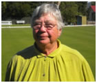

Jim Saunders
(Senior Vice-President)
Jim Saunders spent his working life in agriculture and agribusiness. He spent many years dairy farming before turning his attention to agripolitics where he made his mark as a leader in farmer organisations. He has served as a director on statutory boards and also as Deputy Chairman of the company now known as Incitec Pivot. He also spent many years on the Council of a major agricultural college.
In his latter working years he had his own consulting company and specialised in general management, public communication and strategic planning in the agribusiness sector.
In 2005 he retired and discovered the wonderful world of croquet. He is very competitive and plays in tournaments in Australia and abroad. His most notable successes include winning the Australian Open Handicap Singles in 2007 and representing Victoria in the Golf Croquet Interstate Shield in 2010.
As well as playing golf croquet, Jim has become involved with the management and administration of the sport and is currently a member of the VCA Committee of Management, VCA Tournaments & Fixtures Committee, Chairman of the VCA GC Selection Committee and VCA Courts Director. He is also the Insurance Officer for Croquet Australia. |
 |
Megan Reynolds
(Vice Presiden)
Megan has played at Moorabinda Croquet Club in Bunbury WA for 8 years, where she is currently President. What attracted her to the sport was the challenge it posed - mental and physical - and the friendly banter around the afternoon tea table afterwards.
She firmly believes that solid, friendly clubs are the best foundation for the building of sports. She is passionate about women's croquet, and seeing the great croquet facilities we have being used by local community groups (of course with the notion of roping more members in!).
Representing WA in Association Croquet is a highlight of her year. She is married to Kim, who has represented WA in Golf Croquet for 7 years.
Other 'pastimes' include running a school library and spending time enjoying the south west in orienteering or mountain biking. |
 |
JIM CLEMENT
(Treasurer)
Jim started in croquet in 2005, when he was a foundation member of the Sarsfield Croquet club, elected as the inaugural Secretary and Public Officer and appointed as the Club’s delegate to the Gippsland Croquet Association, positions he retains today. He accredited as Golf Croquet referee the following year and has since officiated at club, regional, state, national and international events. He has a deep interest in GC Rules and contributes articles on the rules to magazines and newsletters.
Jim was elected Secretary of Croquet Victoria in June 2010 and re-elected in June 2012 for another two year term. He commenced to under the ACA Treasurer in 2009, was appointed as ACA Assistant Treasurer in 2010 when that position was established and retained the position, with a short hiatus, until elected Honorary Treasurer in March 2013.
In his community, Jim is Secretary/Treasurer of both the Bairnsdale Junior Cricket Association and of the local Sarsfield Recreation Reserve Committee of Management.
Jim and his wife, Sandy live on a five acre block in rural Sarsfield, near Barnsdale, Victoria, which is in a mobile phone black hole (and a digital TV grey hole); their two sons and three grandchildren live in Tasmania. When not administering, refereeing or playing croquet, his is busy looking after his orchard and vegetable garden on the block he and Sandy share with two Boxer pups, chickens and an Angora goat.
|
|
Robyn Wallace
Immediate Past President –
Working Career:
Senior Lecturer, Acting Head of Department – University of Newcastle. Faculty representative on Senate Board of Environment Studies.
Council Alderman, Vice Chairman Planning, Chair NSW Advisory Council ABC, Chair Walka Trust.
Croquet Achievements:
2002 President Maitland Croquet Club
Senior Vice President – Croquet NSW
State Co-ordinator of Golf Croquet
State Handicapper for Golf Croquet
2009 to 2011 President Croquet NSW
2011 to 2014 President ACA
2007 Selected in the first state Golf Croquet Team for the Interstate Cup
Marital Status:
Married with two daughters and four grandchildren |
 |